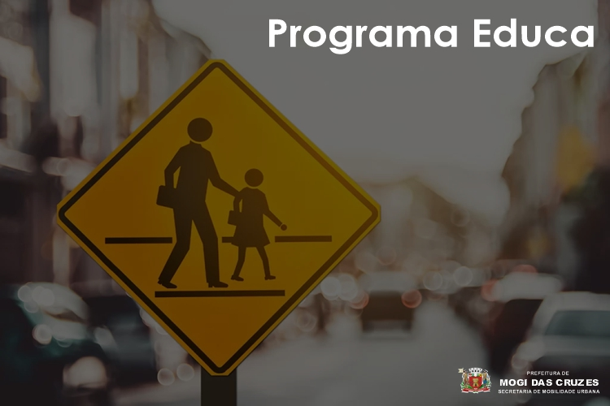
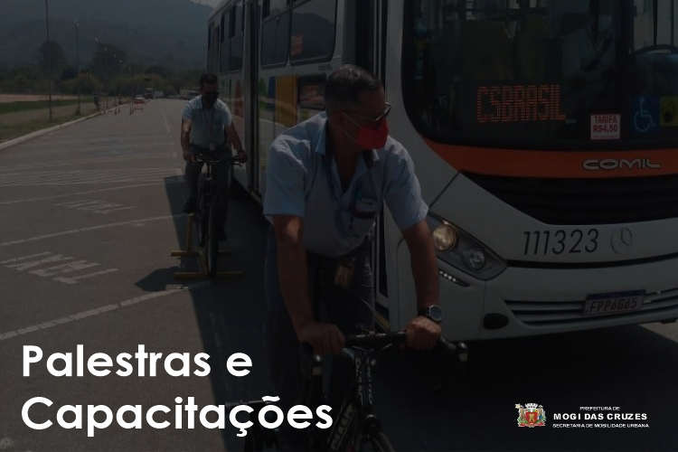

Seja bem vindo ao portal do Departamento de
Educação para o trânsito
da prefeitura de Mogi das Cruzes.
Aqui você pode conhecer mais sobre nós, nossas ações e como fazer do trânsito um lugar mais seguro.



